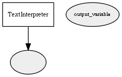

Global overview
All modules
All variables
All commands
Mission files
Pipelines
Variable: "output_variable"
Variable info:
Variable name
Short description
Who publishes it?
Who subscribes to it?
"output_variable"
The variable specified in the parameters to replay after parsing
TextInterpreter
Variable graph:

Detailed description:
The variable specified in the parameters to replay after parsing
Page generated by
Mooxygen 1.1.0
at Thu Jan 22 11:30:21 2015